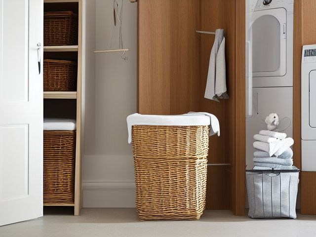

Laundry Room micro zone
The Sorting and Hamper Zone
Turn dirty clothes into loads that can go straight into the machine without being handled twice.
One session: 30-45 min. most of it deciding how many sorting streams your household will genuinely honour

What done looks like
Three labeled bags standing clear of the walking line, each below half full, a small dish on the shelf holding nothing older than today, and bare floor in front of the washer door.
Check these before you start
- FallA hamper standing in the walking line between the door and the machines, or resting on a stair tread while you go back for the rest.
- Fall, cut, or crushReaching blind into a bag of work clothes where a utility knife, a razor blade or a pocketful of screws came home in a trouser pocket.
What to have on hand before you start
These are types of thing, not brands. If you already own something that does the job, that is the right one to use. Each says which pass needs it and what to watch out for.
- Color-coded microfiber cloth set ×12
Wipe, dust, and dry surfaces, in the Shine pass.
Wash by use color; avoid fabric softener. - Neutral pH multi-surface cleaner
Routine cleaning of sealed surfaces, in the Shine and Sustain passes.
Verify surface compatibility; lock around children and pets. - Compact vacuum with attachments
Remove dust, crumbs, and debris, in the Shine pass.
Use appropriate attachment. - Keep, Relocate, Donate, Recycle, Trash container set ×5
Support rapid item routing during Sort, in the Sort pass.
Do not block exits. - Portable cleaning caddy
Transport and contain cleaning inputs, in the Straighten, Shine and Sustain passes.
Secure chemicals from children and pets. - Portable label maker
Create durable standardized labels, in the Standardize and Sustain passes.
Follow surface and adhesive guidance. - Removable write-on labels
Create temporary or adjustable visual controls, in the Standardize pass.
Test on delicate finishes.
Only if your sorting hampers has one: 8 more
Not every sorting hampers needs these. Each one is here because some do, and the reason is next to it.
- Drying Rack
Air-dry delicate or non-dryer items, in the Straighten, Standardize and Sustain passes.
Do not overload; anchor wall-mounted or tall systems where required. - Chemical Storage Bin ×2
Separate and contain household chemicals, in the Straighten, Standardize and Sustain passes.
Do not overload; anchor wall-mounted or tall systems where required. - Broom and Tool Wall Clips
Secure cleaning tools vertically, in the Straighten, Standardize and Sustain passes.
Do not overload; anchor wall-mounted or tall systems where required. - Leak Tray
Protect cabinets and expose plumbing leaks, in the Straighten, Standardize and Sustain passes.
Do not overload; anchor wall-mounted or tall systems where required. - Folding Laundry Basket ×3
Move clean laundry back to rooms, in the Straighten, Standardize and Sustain passes.
Do not overload; anchor wall-mounted or tall systems where required. - Floor Boundary Tape
Define no-storage and equipment boundaries, in the Safety and Standardize passes.
Install and use according to product instructions. - Min-Max Inventory Label
Control replenishment and backstock, in the Standardize and Sustain passes.
Install and use according to product instructions. - Floor-material-compatible cleaner
Clean sealed hard floors, in the Shine and Sustain passes.
Match cleaner to floor material.
The six passes, in order
Work them in this order. Sorting after you have arranged things means arranging things you were about to remove.
Sort
Decide what stays. Everything else leaves the zone now.
Empty every hamper and see what a real week actually produces: whites, darks, towels, delicates, work clothes. Any stream that never fills on its own gets merged into another, and the spare hampers you were holding for those streams leave the room.
Straighten
Give what stays a home, placed where the hand actually reaches.
One bag per stream, standing where clothes are actually taken off rather than where the bags happen to fit. Add a small dish on the shelf for pocket contents, because coins, hair ties and the occasional memory stick need somewhere to land that is not the drum.
Shine
Clean it, and use the cleaning to inspect what you cannot see when it is full.
Damp gym kit is what makes a hamper smell, not dirt. Wipe the inside of each bin while it is empty, and never let a wet towel spend the night in a lined bag with the lid down.
Surface by surface, all 5 of them, with what to use on each.
Safety
Make the zone safe for everybody who uses it, including the shortest person.
A hamper parked on a landing or at the top of a step is a fall you take with your arms full and your view blocked. Keep the bags out of the walking line entirely, and never carry a basket loaded higher than your eyeline.
Standardize
Write down the best way you know today, so it survives you forgetting.
Label each bag with the load it makes rather than the colour it holds: hot towels, cold darks, gentle. Anyone in the house can then start a machine without asking which setting the bag wants.
Sustain
Attach the reset to something that already happens, so it keeps itself.
Pockets get checked as the item goes into the bag, not later at the machine. That dish on the shelf is where a lip balm stops being a whole ruined load.
The delicates bag that never fills
You sort into five streams because a care label once told you to, and one of those bags has been sitting a third full for three weeks while the thing you actually wanted washed waits inside it. The rule: a stream earns its own bag only if it has run as a full load, by itself, in the last month. Everything that fails that test merges into cold and gentle with a mesh bag inside the drum. Sorting is only worth doing when it produces a load you can run today, and a bag that waits three weeks is not sorting, it is a small pile of clothes you have taken out of circulation.
Cleaning it properly, surface by surface
Work down, not across. Whatever comes off a high surface lands on the one below it, so cleaning the floor first means cleaning it twice.
Carry these in with you. Color-coded microfiber cloth set; Neutral pH multi-surface cleaner; Compact vacuum with attachments; Portable cleaning caddy; Floor-material-compatible cleaner.
- The shelf and its small dish
Empty the dish, wipe the shelf with a damp microfiber, and clear anything sitting there older than today. - The three sorting bags, inside and out
Tip each bag empty, vacuum the crumbs and grit from the bottom seam, wipe the inside walls with neutral pH cleaner on a cloth, and wipe the outside where hands grab it. Let each one air fully before it lines up again. - The washable bag liners
Pull any washable liner out and launder it, because that is what actually holds the smell. Dry it right through before it goes back in the bag. - The lids, rims, and the frame the bags stand in
Wipe the lid rims and the frame or stand where damp and lint settle unseen, and dry them off. - The walking-line floor in front of the washer
Vacuum the strip of bare floor between the door and the machines, then mop it with the floor-material-compatible cleaner so no detergent film leaves it slick.
Inspect as you clean. Cleaning is the only time you see the zone empty, so use it.
- Soft dark spotting or a musty note in a bag seam is mould starting in the weave. Flag it.
- A liner that has torn, or a bag bottom that has gone soft and damp. Note it.
- A frayed carry strap or handle on a bag you haul up the stairs loaded. Flag it before it lets go.
- The small dish holding a button battery, a coin, or a screw that rode in on a pocket. Flag it.
The standard that keeps it fixed
Every bag is a load, labeled by wash setting, and emptied before it passes half full.
Reset trigger. when you undress at the end of the day
The rest of the laundry room, in working order
Each of these is one session on its own. Finish this zone before you open the next.
- The Washer and Dryer
- The Detergent and Treatment Zone
- The Sorting and Hamper Zone, you are here
- The Folding Surface
- The Hanging and Air-Dry Zone
- The Utility and Cleaning Zone
The Laundry Room in full, with what each of the 6 zones is for
Related reading
- What is 6S?
- This zone's safety pass, in full
- Is one spot in this zone always the one you skip?
- Why this zone gets messy again
- Decluttering vs. organizing
- Before you buy storage for this zone
- Still does not fit, even after the honest count?
- Does something in this zone actually get used somewhere else?
- Stuck on one item in this zone?
- Written the standard, but nobody else follows it?
- Does everyone in the house agree what "done" looks like here?
- Does more than one person use this zone?
- Found a duplicate of something in this zone?
- Why the standard above names one home per category
- Is the everyday item in this zone actually the easy one to reach?
- Not sure whether to keep something in this zone?
- Does this zone keep running out of something?
- Started this zone and stalled partway through?
- Have you stopped noticing the clutter in this zone?
When you want it off the screen
Carry The Sorting and Hamper Zone into the room
The method above is complete and free. The Whole House Print Pack puts The Sorting and Hamper Zone and the other 113 micro zones on 684 printable cards, so the steps you just read are not stuck behind a phone screen while your hands are full.
The Print Pack, 19 dollarsJust this zone, 4 dollarsOr draw a card free
The Sorting and Hamper Zone on its own is 4 dollars for 6 cards. All 114 micro zones is 19 dollars for 684. The whole house is the better buy; the single zone is here so you can take only what you are working on.
If The Sorting and Hamper Zone keeps fighting back, the real problem usually sits somewhere else in the room. A one hour virtual consult is 250 dollars: we find the function, the friction and the root cause together, and you keep a written standard for the space. See what a consult covers.